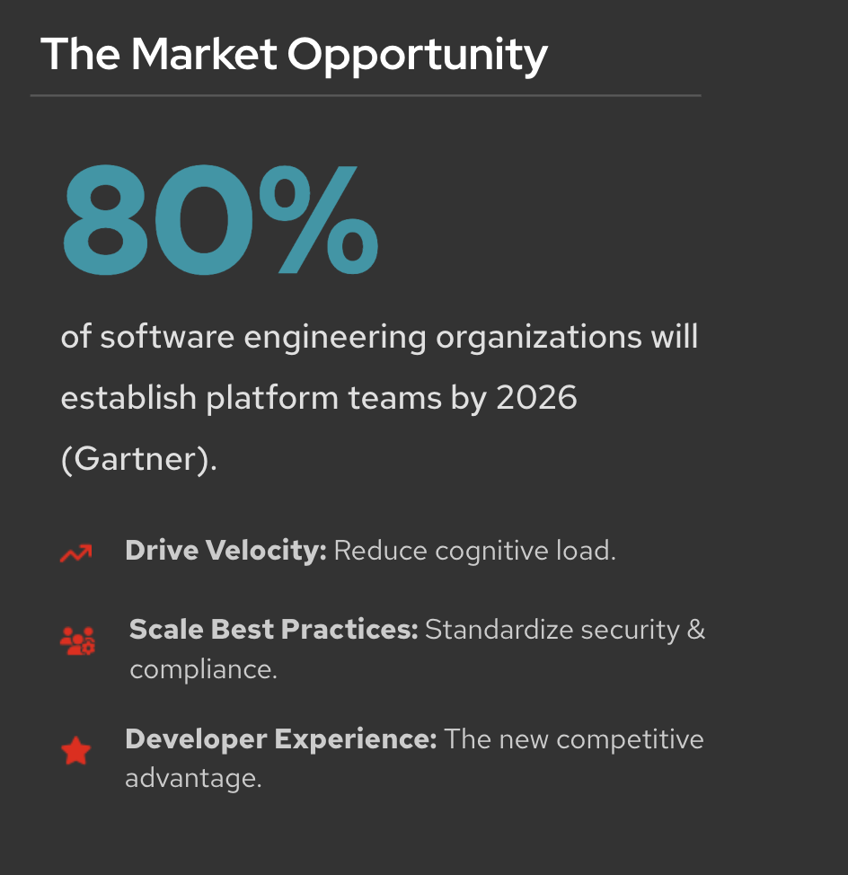
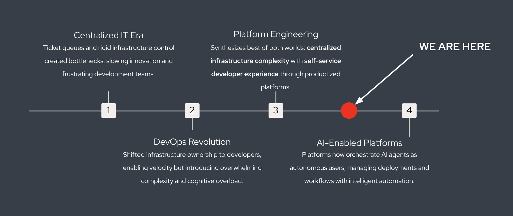

The Evolution of Platform Delivery
How Software Delivery Has Evolved
Modern software delivery has continuously evolved to address new challenges in application development, operations, and scalability.
This lesson explores how organizations progressed from DevOps to Site Reliability Engineering (SRE) and, ultimately, to Platform Engineering—the foundation of modern Application Platforms.
| As you progress through this lesson, think about which stage best reflects your current organization. |
It Started with DevOps
-
DevOps transformed the way software teams collaborated by breaking down the traditional barriers between development and operations.
-
Instead of working in isolation, developers and operations teams shared responsibility for delivering and operating applications.
-
As organizations adopted DevOps practices, developers gradually assumed additional operational responsibilities beyond writing application code.
What was expected from developers? (Click to expand)
Developers were expected to:
-
Write application code
-
Build and manage infrastructure
-
Configure CI/CD pipelines
-
Deploy applications
-
Monitor production systems
-
Respond to incidents
-
Understand Kubernetes and cloud platforms
-
|
While DevOps increased delivery speed, it also introduced a new challenge—developer cognitive overload. Developers spent more time managing infrastructure and less time building business features. |
Next Came Site Reliability Engineering (SRE)
-
As applications became more complex, organizations introduced Site Reliability Engineering (SRE) to improve reliability through automation, monitoring, and operational best practices.
-
SRE teams helped automate operational tasks and improve platform reliability. However, as the number of applications and development teams grew, centralized SRE teams often became a bottleneck because every team depended on their expertise.
Common SRE responsibilities (Click to expand)
-
Automating operational tasks
-
Improving reliability
-
Monitoring production systems
-
Incident response
-
Performance optimization
-
Capacity planning
-
Then Came Platform Engineering
-
Platform Engineering emerged to reduce developer cognitive load while enabling organizations to standardize software delivery.
-
Instead of expecting every developer to become an infrastructure expert—or every SRE team to support every application—platform teams build reusable capabilities that developers can consume through self-service experiences.
-
These capabilities include:
-
Self-service developer experiences
-
Standardized workflows
-
Golden Paths
-
Internal Developer Platforms (IDPs)
-
Built-in security and governance
-
Automated software delivery

Characteristics of Platform Engineering (Click to expand)
Platform Engineering treats the platform as a product.
Rather than building applications directly, Platform Engineers build reusable capabilities that application teams can consume on demand.
Their goal is to make the secure, compliant, and recommended path the easiest path for developers.
-
|
Platform Engineering doesn’t replace DevOps or SRE. Instead, it builds upon their strengths by creating reusable platforms that enable developers to deliver software faster while allowing operations teams to maintain security, governance, and reliability. |
The Evolution of Platform Delivery
-
Software delivery continues to evolve.

Traditional IT (Click to expand)
Infrastructure provisioning was centralized.
Developers relied heavily on operations teams to provision servers, configure environments, and deploy applications.
DevOps (Click to expand)
Developers gained greater ownership of the application lifecycle.
This increased agility but also increased operational complexity and cognitive load.
Platform Engineering (Click to expand)
Platform teams provide reusable services, Golden Paths, and Internal Developer Platforms (IDPs).
Developers consume these services through self-service workflows while platform teams maintain governance and standardization.
AI-Assisted Development (Click to expand)
Modern platforms are beginning to support AI assistants and autonomous agents alongside human developers.
These platforms provide APIs, guardrails, and automation that enable both developers and AI to build, test, deploy, and operate applications safely.
|
Throughout this learning path, we’ll focus primarily on Platform Engineering because it forms the foundation of modern Application Platforms such as Red Hat OpenShift. |